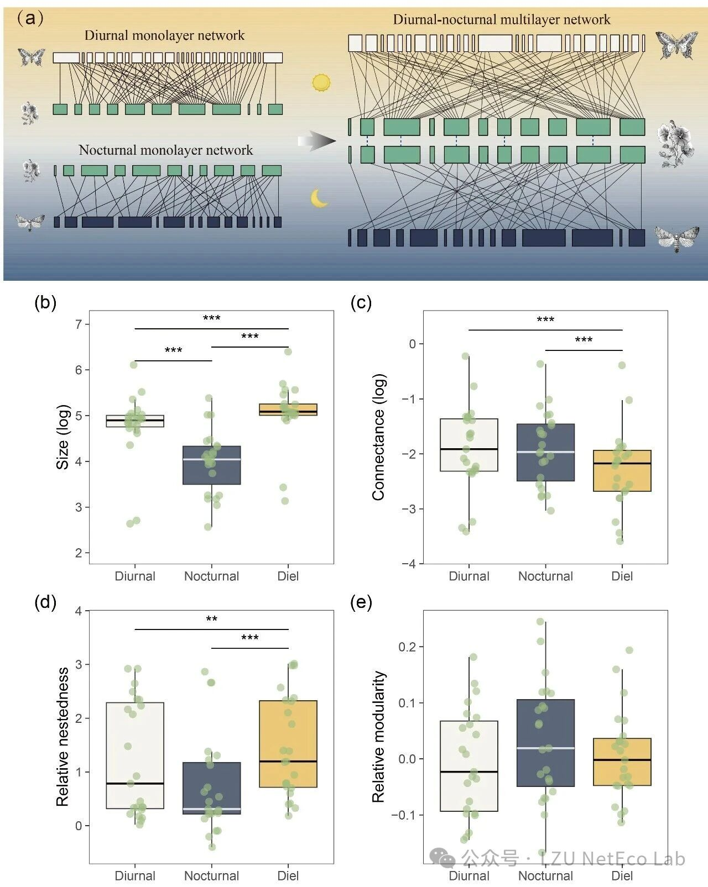
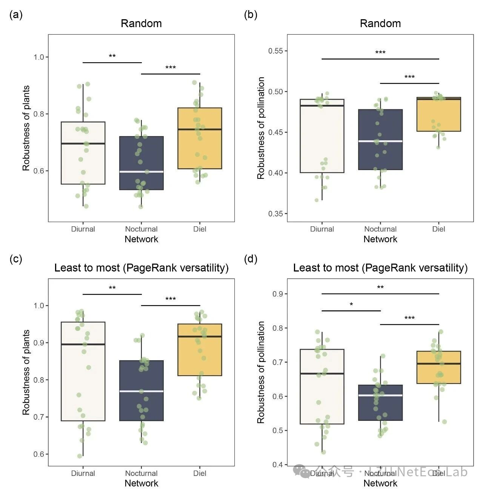

传粉是绝大多数开花植物繁殖的基础，全球85%以上的被子植物依赖动物传粉者。长期以来，生态学对传粉网络的研究多集中在白天活动的物种上，夜晚的传粉活动在研究中被系统性地忽略了。兰州大学生态学院严川团队近期在《Conservation Biology》上发表题为“Temporal integration of diurnal and nocturnal interactions enhances the robustness of plant–pollinator networks”的研究成果，通过整合全球同时包含日间和夜间传粉互作的数据集，从多层网络角度系统性分析了昼夜双层传粉网络的结构、稳健性及两者的关联。

研究发现，日间和夜间传粉网络在结构上存在明显的不对称性。日间传粉网络的物种丰富度显著高于夜间，并且包含了更高比例的核心-核心互作——即核心植物与核心传粉者之间的互动。相比之下，夜间网络中外围物种和外围互作的比例更高，结构上更加特化和松散。这种结构差异本身并不意外，但关键在于，当两个网络通过共享植物物种连接成一个完整的昼夜多层网络时，其整体表现并不能由任一单层网络代表。

模拟物种灭绝实验的结果显示，整合后的昼夜网络在植物存活率和传粉功能维持方面，均显著优于单独的日间或夜间网络。这表明整合后的系统在应对传粉者损失时具备了额外的缓冲能力。这种增强的稳健性可能源于两个机制：其一，那些在白天和夜晚都被访问的昼夜植物在多层网络中充当了跨层连接的关键节点，这些植物具有较高的多面性，将两个时间层的传粉者连接起来，形成一种时间上的补偿效应；其二，植物的模块调整性较低，即同一植物在白天和夜晚倾向于与同一功能模块内的传粉者互动，意味着跨时间的生态位具有延续性，而非每日重建。
有趣的是，研究还发现多层网络的模块化指数与稳健性呈负相关。在昼夜耦合的传粉网络中，过高的模块化可能限制了模块之间的补偿性互动，反而降低了系统应对扰动时的弹性。但由于模块性指数作为单一指标，难以全面反映模块结构，因此需进一步探讨其具体机制。
从保护实践的角度来看，本研究的发现提示了几个值得注意的方向：以日间数据为基础识别出的关键植物物种，往往只能覆盖24小时完整网络中真正核心枢纽的一部分。如果保护策略仅基于白天的观测数据，可能会遗漏那些在夜间发挥重要连接作用的植物。此外，光污染等人类活动对夜间传粉者的影响，也可能通过破坏昼夜网络之间的连接，间接影响整个系统的稳定性。在制定传粉者保护措施时，将时间维度纳入考量，可能比仅关注日间活动物种更为有效。
该成果以论文“Temporal integration of diurnal and nocturnal interactions enhances the robustness of plant–pollinator networks”在线发表于《Conservation Biology》。兰州大学生态学院博士研究生赵洋洋（现已毕业）为该论文第一作者，严川教授为通讯作者。该研究得到国家自然科学基金及兰州大学研究生创新之星项目的资助。